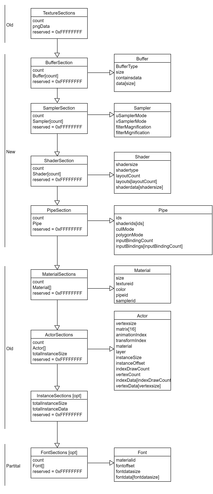

Currently all shaders have to be written manuel. They are not being included within the packaging of the game nor are there pipe being generated automatically. All surrounding resources such as per index buffer and push const memory are hard coded and not dynamic.
Pipeline creation, shader usage as well as buffers used in the draw are not being automatically build from what the artist supplies. As well as they are not included in the game package, rather they are compiled down into C code.
The solution would be to introduce two new sections in the package loading system. The first one would include shaders, the second would include the pipe information. This would enable us to dynamically create pipelines and shaders for each material. Furthermore this should be tied to the material which then contains the pipeline which this material uses to render. If no pipeline should be given to the material a default pipeline will be used.
The introduction of a shader and a pipeline section in order after texture loading.

Status: RFC